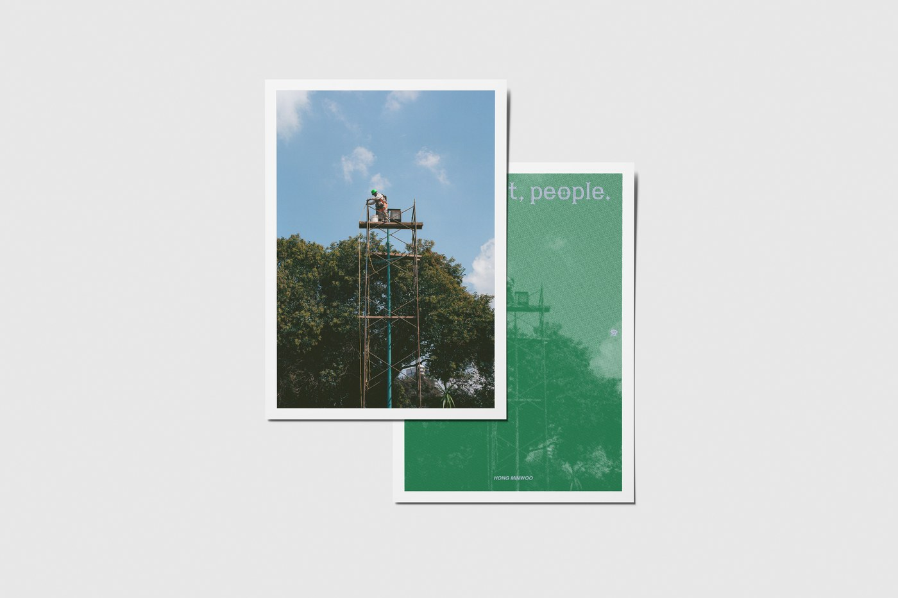

"이번 주 SPC 가 사진첩 두 권을 함께 펴냅니다. 김도균의 《비오톱 서울》과 홍민우의 《빛, 먼지, 사람》. 한 도시 한 호씩, 작가 한 명의 시선을 천천히 묶어가는 시리즈가 세 번째 권에 도착했습니다."
《빛, 먼지, 사람 / Sun Dust People》 은 Street Photography Club (이하 SPC) 사진첩 시리즈의 세 번째 권입니다. 홍민우 작가가 거리를 걸으며 반복해서 마주친 빛, 먼지, 사람의 상태들을 모았습니다.
빛이 먼저 보였습니다
강한 빛에 표면은 날아가고 형태만 남습니다. 공기에는 늘 먼지가 있었고, 걷다 보면 묘한 흙냄새가 났습니다. 눈에 또렷이 보이지는 않지만 먼지는 빛을 따라 움직였습니다. 빛은 직선으로 떨어지지 않고 펼쳐지거나 오므라들었고, 장면은 선명하게 고정되기보다 붕 떠 있는 것 같았습니다.
사건이 아니라 상태
작가가 본 것은 사건이 아니라 상태입니다. 눈앞에 펼쳐지는 광경들에서 그는 사건을 쫓기보다 그 안에서 사람들이 어떻게 움직이는지를 봅니다. 지나가고, 멈추고, 다시 흩어지는 거리. 사람과 사람 사이, 사람과 공간 사이에 생기는 간격.
사진을 찍고 나서 보면, 장면보다 상태가 먼저 남습니다. 빛의 방향이나 공기의 밀도 같은 것들. 그 안에서 사람이 어떻게 보였는지가 같이 남습니다.
필름이 머금은 시간
필름으로 찍은 이미지들은 그 상태를 더 오래 유지합니다. 빛이 번지거나 디테일이 일부 사라지고, 시간은 완전히 굳어지지 않은 상태 로 남아 있습니다. 비슷한 빛과 공기, 반복되는 움직임이 기준이 됩니다. 장면과 장면 사이에는 설명되지 않는 간격이 있습니다.
《빛, 먼지, 사람》은 반복해서 마주친 상태들을 모은 것입니다. 빛, 먼지, 사람. 그 세 가지가 겹쳐지는 순간들을 계속 보고 있었습니다.

Street Photography Club 사진첩 시리즈
우리는 거리의 순간을 기록하고자 하는 모든 이들을 위한 컬쳐 플랫폼입니다. 도시든 시골이든, 골목이든 광장이든, 우리가 서 있는 그곳이 곧 하나의 프레임입니다. 찰나를 관찰하고, 일상의 진면을 기록하며, 사람의 시선을 나눕니다.
SPC 는 거리 사진가들의 시선을 한 자리에 모으는 작은 컬처 플랫폼입니다. ISSUE.01 김지훈의 《해소의 바다, 부산》 으로 첫 권을 묶었던 시리즈가, 이번에 ISSUE.02 김도균의 《비오톱 서울》 과 ISSUE.03 홍민우의 《빛, 먼지, 사람》 두 권을 한 번에 펴냅니다.
책 정보
- 제목 빛, 먼지, 사람 (Sun Dust People)
- 작가 홍민우
- 발행 4rest
- 판형 A5 (변형) / 32P
- 가격 15,000 원
- ISBN 979-11-992035-4-9